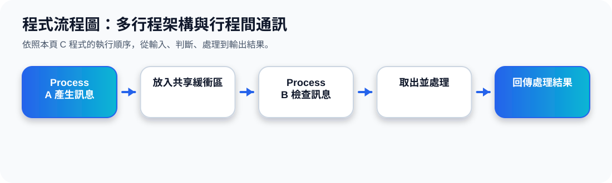

二、Chrome Browser 的 Multiprocess 架構
核心觀念 多行程架構會把不同任務分給不同 process。投影片以 Chrome 為例，說明 Browser process、Renderer process、Plug-in process 各自負責不同工作。
每個分頁或外掛可以用獨立 process 隔離，避免單一網頁錯誤影響整個瀏覽器。
Browser Process
管理使用者介面、磁碟與網路 I/O。
Renderer Process
處理網頁呈現，例如 HTML 與 JavaScript。
Plug-in Process
處理不同類型的外掛功能。
Chrome 多行程動畫
三、Independent Process 與 Cooperating Process
Independent Process
不會影響其他 process，也不會被其他 process 影響。它通常獨立執行，不需要交換資料。
Cooperating Process
會影響其他 process，或需要與其他 process 分享資料、加速計算、模組化合作，因此需要 IPC。
IPC 的目的不是單純讓行程「存在」，而是讓行程可以交換資訊、分工合作，讓大型系統更穩定、更容易維護。
四、IPC：Message Passing vs Shared Memory
投影片 40 比較兩種 IPC 模型：左邊是 message passing，process 透過 kernel 的 message queue 傳訊息；右邊是 shared memory，process A 與 process B 共同存取同一塊 shared memory。
Message Passing
透過訊息傳遞，結構清楚，較容易控制。
Shared Memory
共同讀寫同一記憶體區，速度快，但需同步。
IPC 流程動畫
五、兩種 IPC 的比較
Message Passing
適合資料交換量較小、需要明確溝通介面、希望降低共享資料錯誤的情境。
Shared Memory
適合大量資料交換與高效能需求，但要處理同步、互斥與資料一致性問題。
程式流程圖與流程講解
程式流程圖：多行程架構與行程間通訊

流程講解
可編輯 C 程式範例與線上編輯器
可編輯 C 程式：多行程架構與行程間通訊
這段程式依照上方流程圖設計，包含中文註解，適合貼到線上編輯器直接執行與修改。
程式題目完整教學內容
程式題目完整教學：多行程架構與行程間通訊
一、程式題目講解
用 shared buffer 模擬兩個行程透過共享記憶體傳遞訊息。
核心觀念是 IPC：Process A 將訊息寫入共享緩衝區，Process B 再從同一個緩衝區讀取。
二、完整程式碼
以下程式碼可直接複製到 C 語言線上編譯器執行。程式中已加入中文註解，說明主要變數、判斷流程與輸出目的。
#include <stdio.h>
#include <string.h>
/*
主題 11：行程間通訊 IPC
功能：用 shared buffer 模擬兩個 process 傳遞訊息。
*/
int main(void) {
char sharedBuffer[100];
strcpy(sharedBuffer, "Hello from Process A");
printf("Process A 寫入共享緩衝區：%s\n", sharedBuffer);
printf("Process B 讀取共享緩衝區：%s\n", sharedBuffer);
printf("Process B 處理訊息完成。\n");
return 0;
}三、程式執行結果
Process A 寫入共享緩衝區：Hello from Process A
Process B 讀取共享緩衝區：Hello from Process A
Process B 處理訊息完成。結果說明：核心觀念是 IPC：Process A 將訊息寫入共享緩衝區，Process B 再從同一個緩衝區讀取。 程式依照設定的資料與控制流程逐步輸出，因此可以從結果看到每個步驟的執行順序與狀態變化。
四、程式流程圖與流程圖說明
本頁上方已提供對應的程式流程圖，圖中以「開始、資料設定、條件判斷、重複處理、輸出結果、結束」呈現程式執行順序。
程式先宣告 sharedBuffer，再用 strcpy() 寫入訊息，接著用 printf() 顯示 A 寫入與 B 讀取的內容。
五、重要函數與語法說明
char sharedBuffer[100] 建立字元陣列；strcpy() 將字串複製到緩衝區；#include <string.h> 提供 strcpy()。
六、整體說明
本題的學習重點是把作業系統概念轉成可觀察的 C 程式流程。學生應先理解題目概念，再對照程式碼、流程圖與執行結果，掌握變數設定、條件判斷、迴圈處理與輸出結果之間的關係。